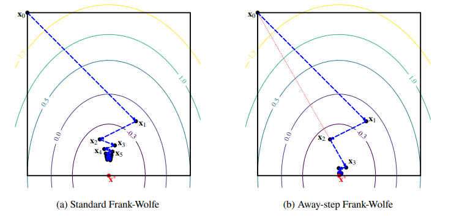

How does it work?
FrankWolfe.jl contains generic routines to solve optimization problems of the form
\[\min_{x \in \mathcal{C}} f(x)\]
where $\mathcal{C}$ is a compact convex set and $f$ is a differentiable function. These routines work by solving a sequence of linear subproblems:
\[\min_{x \in \mathcal{C}} \langle d_k, x \rangle \quad \text{where} \quad d_k = \nabla f(x_k)\]
Linear Minimization Oracles
The Linear Minimization Oracle (LMO) is a key component, which is called at each iteration of the FW algorithm. Given a direction $d$, it returns an optimal vertex of the feasible set:
\[v \in \argmin_{x\in \mathcal{C}} \langle d,x \rangle.\]
Pre-defined LMO for key feasible sets
Several common implementations of LMOS s are available out-of-the-box:
- simplices: unit simplex
FrankWolfe.UnitSimplexOracle, probability simplexFrankWolfe.ProbabilitySimplexOracle; - balls in various norms
FrankWolfe.LpNormLMO; - polytopes: K-sparse
FrankWolfe.KSparseLMO, BirkhoffFrankWolfe.BirkhoffPolytopeLMO.
See Combettes, Pokutta (2021) for references on most LMOs implemented in the package and their comparison with projection operators.
The MathOptLMO
You can use an oracle defined via a Linear Programming solver (e.g. SCIP or HiGHS) with MathOptInferface: see FrankWolfe.MathOptLMO.
Wrapper to combine LMOs
We provide wrappers to combine oracles easily, for example FrankWolfe.ProductLMO for product of oracles or FrankWolfe.SubspaceLMO for projections composed with oracles.
User-defined LMOs
If you want use your own custom LMO MyLMO in the algorithms provided here, it is required that
MyLMObe a subtype ofFrankWolfe.LinearMinimizationOracle;- the method
FrankWolfe.compute_extreme_point(see below) be defined and minimize $v \mapsto \langle d, v \rangle$ over the set $\mathcal{C}$ defined by the custom LMOMyLMO.
FrankWolfe.compute_extreme_point(lmo::MyLMO, direction; v, kwargs...) -> vNote that the constraint set $\mathcal{C}$ defined by MyLMO doesn't have to be represented explicitly, e.g., as a set of inequalities. Indeed, all we need is to minimize a linear function over $\mathcal{C}$, which does not necessarily require an explicit representation of $\mathcal{C}$. Even black box minimization procedures can be considered!
Optimization algorithms
The package features several variants of Frank-Wolfe that share the same basic API.
Most of the algorithms listed below also have a lazified version: see Braun, Pokutta, Zink (2016).
Standard Frank-Wolfe (FW)
It is implemented in the frank_wolfe function.
See Jaggi (2013) for an overview.
This algorithm works both for convex and non-convex functions (use step size rule FrankWolfe.Nonconvex() in the second case).
Away-step Frank-Wolfe (AFW)
It is implemented in the away_frank_wolfe function.
See Lacoste-Julien, Jaggi (2015) for an overview.
Stochastic Frank-Wolfe (SFW)
It is implemented in the FrankWolfe.stochastic_frank_wolfe function.
Blended Conditional Gradients (BCG)
It is implemented in the blended_conditional_gradient function, with a built-in stability feature that temporarily increases accuracy.
See Braun, Pokutta, Tu, Wright (2018).
Pairwise Frank-Wolfe (PFW)
It is implemented in the pairwise_frank_wolfe function. See Lacoste-Julien, Jaggi (2015) for an overview.
Blended Pairwise Conditional Gradients (BPCG)
It is implemented in the FrankWolfe.blended_pairwise_conditional_gradient function, with a minor modification to improve sparsity.
See Tsuji, Tanaka, Pokutta (2021)
Comparison
The following table compares the characteristics of the algorithms presented in the package:
| Algorithm | Progress/Iteration | Time/Iteration | Sparsity | Numerical Stability | Active Set | Lazifiable |
|---|---|---|---|---|---|---|
| FW | Low | Low | Low | High | No | Yes |
| AFW | Medium | Medium-High | Medium | Medium-High | Yes | Yes |
| B(P)CG | High | Medium-High | High | Medium | Yes | By design |
| SFW | Low | Low | Low | High | No | No |
While the standard Frank-Wolfe algorithm can only move towards extreme points of the compact convex set $\mathcal{C}$, Away-step Frank-Wolfe can move away from them. The following figure from our paper illustrates this behaviour:
.
Both algorithms minimize a quadratic function (whose contour lines are depicted) over a simple polytope (the black square). When the minimizer lies on a face, the standard Frank-Wolfe algorithm zig-zags towards the solution, while its Away-step variant converges more quickly.
Block-Coordinate Frank-Wolfe (BCFW)
It is implemented in the FrankWolfe.block_coordinate_frank_wolfe function.
See Lacoste-Julien, Jaggi, Schmidt, Pletscher (2013) and Beck, Pauwels, Sabach (2015) for more details about different variants of Block-Coordinate Frank-Wolfe.
Alternating Linear Minimization (ALM)
It is implemented in the FrankWolfe.alternating_linear_minimization function.